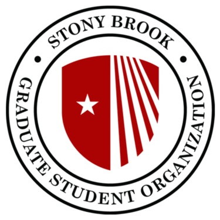

Master of Science in Computer Science
Stony Brook University
- Concentration in Data Science
- GPA: 3.9/4.0
- Coursework: NLP, Distributed Systems, Simulation & Modeling, Machine Learning in Finance, Dynamic Programming, Database Systems
Exp May
2026